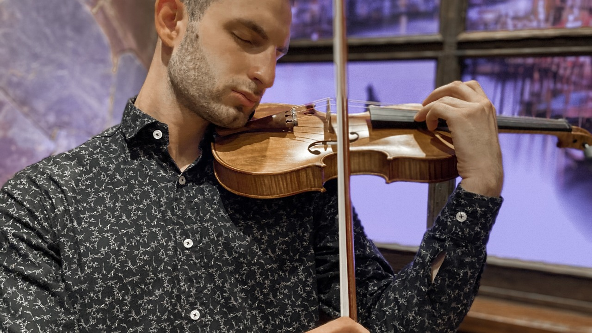

Sonido personal, naciente de su interior, vibrato innato y refinada técnica que busca la pureza musical
“Alesio Sojak es realmente especial…gran sonido, vibrato refinado, técnica perfecta, y un músico auténtico”




Contacto
Sojakviolinista@gmail.comtelefono: +54 9 11 2498-2853